The flagship: a hybrid three-level GaN buck-boost for solar
A 400 W maximum-power-point-tracking converter from one 12-60 V solar panel to a 48 V battery, designed to be as efficient as the physics allows and honest about where it can't be.
Reference design. Simulate and review before use; any build is at your own risk and needs high-voltage and stored-energy safety practice.
| Item | Choice | Why |
|---|---|---|
| Topology | Four-switch buck-boost with each half-bridge replaced by a three-level flying-capacitor leg | Steps up and down; switches block Vbus/2; ripple falls up to 4x; soft-charged 2:1 switched-capacitor behaviour at the 1:2 ratio |
| Switches | 8x EPC2361, 100 V GaN, 1.0 mOhm max | Best weighted efficiency of six candidates in the model's sweep; 100 V margin for flying-cap precharge |
| Disconnect and bypass | 2x Innoscience INV100FQ030C bidirectional GaN | One channel blocks reverse polarity and back-feed; bypass removes all switching loss when the panel MPP equals the battery voltage |
| Inductor | Coilcraft SER2918H-472, 4.7 uH, 2.86 mOhm | Copper loss dominates once three-level ripple shrinks the flux swing |
| Flying capacitors | 4x TDK 10 uF 100 V X7S per leg | ~24 uF effective at 30 V bias; ripple under 10 % of Vbus/2 everywhere |
| Control | STM32G474 (184 ps high-resolution timer); reference C state machine; optional iCE40 HDL modulator | Global sweep + adaptive perturb-and-observe, mode select with hysteresis, frequency from a loss-model lookup table |


Operating-point explorer
Predicted efficiency across the input range
| Panel voltage | CEC-weighted | Euro-weighted | Peak |
|---|
Where the physics says no
- Low input voltage. At 12 V the converter carries 15 A through four series switches, the inductor and the disconnect; conduction loss grows with the square of current, so it tops out near 97.4 %.
- Light load. 0.55 W of housekeeping (controller, eight gate drivers, isolated supplies, sensing) is a quarter of the loss at 56 V, 400 W and most of it at 10 % load.
- Vin = Vout. Both legs switch, a visible dip in the curve; the bypass switch removes it when the panel's maximum power point allows.
How far to trust these numbers
Three independent calculations agree. The analytic model, the time-domain circuit simulation (exact piecewise-linear periodic steady state with dead time, reverse conduction and unbalanced flying capacitors) and ngspice agree: model vs simulation within 0.15 points at every tested point, simulation vs ngspice within 0.005 points. That proves the arithmetic, not the hardware. The best measured GaN buck-boost results we could verify are 99.0 % (TI TIDA-010949, control power excluded) and 99.3 % (Heydari et al., APEC 2023, conditions partly verified). Treat predictions above ~99.3 % as claims awaiting a prototype. The parameters marked ESTIMATE in watt_forge/flagship/params.py are where reality will differ: thermal, dynamic on-resistance, Coss hysteresis, layout inductance.
Design files
- Design rationale: every choice and its numbers.
- Bill of materials (CSV) with verification status per line.
- Loss model spreadsheet with live formulas, and the notebook.
- Circuit simulation and the ngspice netlist.
- Reference controller (C) and three-level modulator (Verilog): reference only, simulate and review before use.
Bill of materials
| Ref | Qty | Part | Description | Status |
|---|